OxygenREC-v2：把行为判别写进生成式推荐的训练目标
京东零售推荐团队在 2026 年 7 月挂出的这篇工作，是 OxygenREC 系列的第二代。第一版主要把生成式推荐（Generative Recommendation, GR）在京东电商侧从零跑通并做了工业级部署；这次 v2 把重点转移到"如何在 GR 的训练目标本身里承载点击/加购/下单这些强度递增的行为信号"。论文由京东零售的 Guo Tang、Hanye Wu、Changjiang Han 三位共一执笔，通讯作者是 Ming Zhang、Yaqiang Zang 和 Pinghua Gong，一作与全体作者均隶属 JD.COM, Beijing, China。论文入口是 arXiv:2607.24255，共 16 页正文加附录，未公开代码/项目页（未核验）。阅读重点建议放在四条主线：Behavior-Aware Instruction 的输入端设计、Behavior-Weighted 预训练损失、privileged teacher + 熵门控的 EA-TOSD 后训练框架，以及 6 个京东线上场景的 A/B 结果。
现在的生成式推荐要么把生成和判别做成联合目标、需要在两个 loss 之间做精细权衡；要么把外挂 ranker 当作 RL reward，被 OOD 打分与 reward hacking 拖累。两条路的共同病根在于：预训练时生成器从来没见过它应该迎合的行为，click 和 order 共享同一 instruction，返回同一个候选分布，行为信号只能在生成之后再补进来。OxygenREC-v2 想回答的是：如何把判别性的行为信号直接内化到生成模型的训练目标，而不是外挂一个 reward model？
1. 背景和问题
1.1 为什么需要"把行为内化"
生成式推荐把召回和排序合并成一个自回归模型：给定 user context $X$、场景 instruction $I_s$、推理 instruction $I_r$，模型按 SID token 逐步解出候选序列 $Y$。这条路线过去两年在工业界快速铺开，但一个关键问题是行为信号（曝光、点击、加购、下单）如何进入训练。OxygenREC-v1 采用的是"用一个外部 ranker 作为强化学习 reward"的做法：GR 生成候选，外挂 ranker 打分，再把格式、相对顺序、排序、多样性等奖励线性叠加去 fine-tune 生成器。这本质上是"外部判别器 + 生成器"的 pipeline。
论文归纳这条路线存在两个不可回避的问题。第一是 reward hacking：GR 生成的候选相对 ranker 的训练分布是 OOD 的，ranker 打分不可靠，策略可能通过投机的方式抬高代理分数却损害真实推荐质量。第二是多项奖励之间需要人工调权重，格式、排序、多样性彼此拉扯，权重变成新的调参问题。
论文指出这两个问题的共同根源：预训练阶段生成器根本没见过它应该推动的目标行为，一个 click 目标和一个 order 目标共享同一 instruction，因此模型对二者返回的候选分布几乎相同；行为信号只能在生成结束之后再加进来，永远滞后于候选集合的形成。
1.2 三种把行为耦合进 GR 的范式
论文把已有做法与 OxygenREC-v2 放在一张图对比。
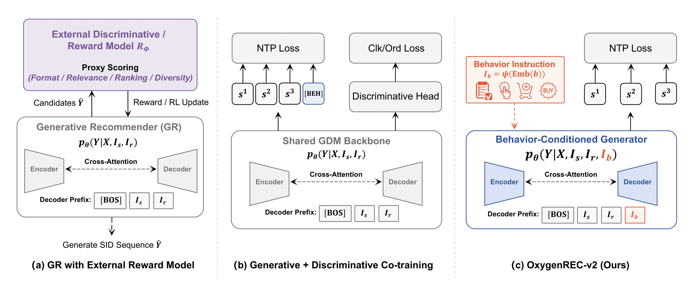
上图 (a) 是 OxygenREC-v1 沿用的"外部判别 / 外部 reward"路线：GR 用 NTP loss 独立预训练，另有一个 Reward Model 对候选做 proxy 打分（格式/相关性/排序/多样性），再回填到 RL update；(b) 是 GDM（Generative + Discriminative）联合训练路线，backbone 共享，但除了 NTP loss 还挂了一个判别头预测点击/下单等标签，需要同时优化生成和判别两个目标；(c) 是 OxygenREC-v2 的做法，把行为标签 $b$ 通过 $I_b = \psi(\mathrm{Emb}(b))$ 变成一个 instruction 放到 decoder prefix 里，直接让生成分布 $p_\theta(Y\mid X, I_s, I_r, I_b)$ 与目标行为相关，从输入端条件化生成，而不是在输出端再打补丁。
论文特别强调"把行为放在输出端不能解决问题"：GR 后面挂 behavior classifier 或 behavior suffix，只能重排一个"已经生成得与行为无关"的候选集，rerank 改的是"评分"，不是"生成什么"。OxygenREC-v2 的关键判断是必须让行为信号进入 generation 本身，让候选分布 by construction 就是 behavior-aware 的。
1.3 IDGR 与 EA-TOSD 提出的问题定义
在此基础上论文把方案命名为 IDGR（Internalize Discrimination into Generative Recommendation），并对预训练和后训练同时给出解法：
- 预训练阶段用 Behavior-Aware Instruction 把行为直接放进 decoder prefix，损失按行为价值加权，让 click/cart/order 目标在 pre-training 就被区分对待。
- 后训练阶段抛弃外挂 ranker，改用基于真实行为命中的 verifiable reward + 一个共享 backbone 的 privileged teacher（多喂一段未来行为前缀 $F$）来做熵感知的 self-distillation，整个框架叫 EA-TOSD（Entropy-Aware Trajectory-Optimization Self-Distillation）。
- 整套方法在同一个 backbone 上完成，推理阶段无任何额外模块。
这就把最初的问题重新表述为：能否用"内在于生成分布的行为条件 + 由真实行为衍生的可验证奖励"取代"外挂 ranker + proxy reward"。回答这个问题需要三块证据——预训练的行为条件是否真的改变了生成状态、后训练的可验证奖励是否比 proxy reward 提升更大、内化以后是否能在真实工业业务里体现在 GMV/UCTCVR 上，这些都会在实验章节被拆开验证。
2. 方法
2.1 总览：一图串起 EA-TOSD
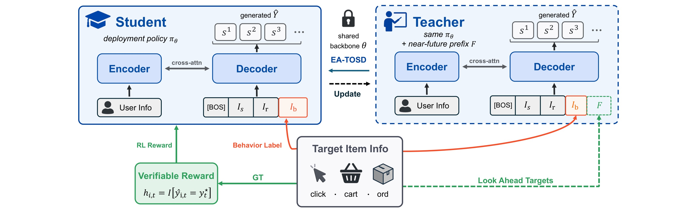
OxygenREC-v2 的部署策略仍然是一个 encoder–decoder：encoder 吃 user context 序列，decoder 用一个 $[\text{bos}, I_s, I_r, I_b]$ 作为 prefix，逐步吐出 SID token 组 $(s_1,s_2,s_3)$。训练时同一个 backbone $\theta$ 会以两种身份出现——作为学生 $\pi_S(\cdot\mid X)$ 只看正常 prefix，作为 teacher $\pi_T(\cdot\mid X, F)$ 则在 prefix 之后再拼接一段 near-future 目标序列 $F$（未来 click/cart/order 的 SID）。verifiable reward 的定义直接写在图上——命中函数 $h_{i,t}=\mathbb I[\hat y_{i,t}=y_t^\star]$，命中越多的 rollout 就是最好的轨迹。整张图的关键读法是：teacher 与 student 是同一个 $\theta$，只是喂给 teacher 一段"未来看到的目标序列"，让它扮演"知道后来发生了什么"的 privileged observer，训练完就丢弃、不进入推理。图左下把 rollout 的命中构造成 verifiable reward，回到学生 $\pi_S$ 做 RL 更新；图中间"EA-TOSD Update"是学生更新入口；图右侧的 teacher 通过 privilege advantage $A_t$ 与 teacher entropy $H_t^T$ 把 self-distillation 拆分成低熵/高熵两条路径，把学生对齐到"如果看到未来会怎么打分"的 teacher 上。整套方法从预训练的 Behavior-Aware Instruction、Behavior-Weighted CE，到后训练的 verifiable reward + entropy-aware privileged distillation，都在这一张图上串起来；后面 2.2–2.5 会按论文顺序把每一块拆开写清。
2.2 Behavior-Aware Instruction $I_b$
OxygenREC-v2 的第一块改动是在预训练阶段就让行为进入 decoder prefix。行为集合 $b \in \{\text{clk}, \text{cart}, \text{ord}\}$，每个行为都有一个 embedding $e_b$，经过一个两层 FFN 投影 $\psi$ 得到 instruction 表征。生成目标由此变为 behavior-conditioned 的联合分布：
符号解释：$b\in\{\mathrm{clk},\mathrm{cart},\mathrm{ord}\}$ 是目标行为标签；$\mathrm{Emb}(b)=e_b$ 是复用 decoder embedding table 的行为向量；$W_1\in\mathbb R^{d_{\mathrm{ff}}\times d_{\mathrm{model}}}$、$W_2\in\mathbb R^{d_{\mathrm{model}}\times d_{\mathrm{ff}}}$ 是两层投影矩阵；$\sigma$ 是 negative slope 0.01 的 LeakyReLU，$\mathrm{drop}$ 是两层之间的 dropout；$I_s$、$I_r$ 分别是场景与推理 instruction，$Y$ 是 flattened SID 序列，$X$ 是 user context。三种行为共享同一 $\psi$，$\psi$ 是"整个方法为 behavior instruction 新增的唯一参数"——没有独立的 behavior lookup table，也没有额外的 head。decoder prefix 的排列是 $[\text{bos}, I_s, I_r, I_b]$；附录 B.4 又做了 insert-right / insert-left / prepend 三种位置的消融，结论是三种放置的整体 HR 差异 <0.3pt，但 insert-right 在 order 与 click 子集上略强，因此设为默认。附录 B.5 的 behavior steering 实验把 $I_b$ 强制固定为某个行为、其它样本的真实标签不变，结果 order 子集在 force order 下保持 53.01 HR@512（对角接近上限 53.02），force click 时下降 5 分左右——这证明 $I_b$ 不只是"给样本贴个标签"，而是真正驱动生成分布向对应行为迁移，笔记 3.6 会再用 Figure 3(b) / Figure 4 从"候选集迁移"与"decoder hidden state 线性可分"两个视角复核这一效应。
2.3 Behavior-Weighted 预训练：target 扩展与价值权重
如果按普通 GR 训练，每个用户样本只从若干真实 target 里挑一个拼成实例，那么曝光样本会淹没稀有的 cart/order，与 $I_b$ 的意图完全相反。论文在 4.2 把"行为稀疏 vs 价值"具体化为两件事：第一步是 target 选择与扩展——对每个用户样本遍历其所有 logged target，按行为标签展开成独立训练实例，每一条都带自己的 $I_b$；只有"仅曝光"这一类没有 click/cart/order 的 target 会被丢弃，剩下的每个实例都是"一个 target 及其匹配 instruction"的配对，天然覆盖 click/cart/order 三种价值。第二步是行为加权的预训练损失：
符号解释：$\mathcal T$ 是一个 batch 内所有 (SID token, behavior) pair 组成的集合；$y_t$ 是 target 展开后每个位置的 SID token；$b$ 是该 token 所属 target 的 behavior 标签；$w_b$ 是 behavior 价值权重，默认 $w_b=\{1.2, 1.5, 2.0\}$ 对应 click/cart/order；$\mathrm{CE}$ 是标准 next-token cross-entropy；条件项 $(X, I_s, I_r, I_b)$ 与 2.2 相同。权重顺序与 instruction 优先级、teacher 阈值（下文 2.4）完全一致，这是论文一条容易忽视但关键的设计：整个 pipeline（instruction、loss weight、teacher threshold）共用一条 behavior-value scale，"权重多少反映行为多稀有"这件事被端到端保持一致，而不是每层单独调参。预训练目标本身仍是常规 NTP，因此这块改动的边际成本极低。附录 F 的敏感性分析把行为间的 gap 用一个尺度 $k$ 缩放（order/cart 相对 click 的偏移乘以 $k$），扫描 $k\in\{0.5, 1.0, 1.5, 2.0\}$，结论是 $k=1$（默认）就是峰值区，$k=0.5$ 让行为差异变得太平、$k>1$ 又过度放大稀有 order 的影响，两侧都会掉 HR——即"看到 order 比看到 click 提高多少 loss 权重刚好"存在一个最佳工作点，默认权重就落在这个区间。
2.4 EA-TOSD 后训练：verifiable reward + privileged teacher + 熵路由
预训练把行为放进生成分布，但仍然是 supervised；OxygenREC-v2 的后训练目标有两点——让 GR 学到"真的能命中未来行为的候选是什么样"，以及从 privileged view 里蒸馏知识。EA-TOSD 用同一个 backbone、通过四路损失完成这两件事：verifiable reward、privileged self-distillation、high-entropy forward-KL 与一份 behavior-weighted SFT anchor。下面按 rollout → VR → teacher/entropy routing → 复合 loss 的顺序讲清，与 Algorithm 1 一一对应。
Verifiable Reward。 给定上下文 $X$，从当前学生策略 $\pi_S$ sample 出 $G$ 条 on-policy rollouts $\{\hat Y_i\}_{i=1}^G$（每条长度 $L$，对应"保留 target 数 × codebook 深度 $c=3$"）。每步命中函数 $h_{i,t}=\mathbb I[\hat y_{i,t}=y_t^\star]$ 直接用真实 gold SID token 逐位比对，命中就 1、错就 0；因此 reward 完全可以从日志离线算出来，不需要任何 ranker、不需要任何外挂模型——这就是"verifiable"的含义。单条 rollout 的分数、最优轨迹选择与 VR 损失分别是：
符号解释：$G$ 是 rollout group size（论文 Appendix G.1 设 $G=16\text{–}20$）；$\gamma\in(0,1)$ 是几何衰减因子，让早期 decoding step 的命中获得更大权重——因为早期步对应更粗粒度的 codebook（item 的大类），命中它比命中最细的第三位更重要，同时 partial match（前两位对上、第三位错）依然有分数，不会像 exact match 那样把绝大多数 rollout 判 0；$R_i$ 是第 $i$ 条 rollout 的几何加权命中分；$k$ 是分数最高那条轨迹的下标；$\mathcal L_{\mathrm{VR}}$ 只对 $k$ 反传，因为 verifiable hit 在 $G$ 条里通常稀疏，只对 $\arg\max$ 反传避免 0 分 rollout 造成噪声梯度。这一式子替换了旧 pipeline 里的 proxy ranking reward，是"用行为本身而不是模型代理"这条 IDGR 主张在损失层面的具体落点。
Privileged Teacher。 传统 on-policy distillation（OPD）一般需要一个更大的 teacher；OxygenREC-v2 沿用 OPSD 系列的做法，用同一个 backbone $\theta$ 同时扮演 student $\pi_S(\cdot\mid X)$ 与 teacher $\pi_T(\cdot\mid X, F)$：差别只有一处——teacher 的 decoder prefix 里额外拼进一段 near-future 前缀 $F$，把用户后续（未来窗口）真正 click / cart / order 的 item 的 SID token 拼成一段 privileged prefix。前缀长度上限 $m$（默认 $m=2$），构造细节见附录 E：按时间过滤 $t_j > t_0$、按 behavior 优先级过滤 $\rho(b_j)\ge \rho_{\min}$，其中优先级序 $\rho(\text{any})=0 \prec \rho(\text{click})=1 \prec \rho(\text{cart})=2 \prec \rho(\text{order})=3$；然后把 $m$ 个未来 target 的 SID 拼成 $F=[\mathrm{sid}(j_1),\mathrm{sid}(j_2),\ldots]\in\mathbb Z^{m\cdot c}$。teacher 与 student 的差别，就是这一段 $F$。teacher 的 privilege 通过 privilege advantage 表达：
符号解释：$A_t$ 是 teacher 相对 student 在第 $t$ 步对目标 token 的 log-likelihood 差；$A_t>0$ 表示 teacher "看见未来"以后比学生更相信当前 token 是对的，是应该把学生朝这里拉；$A_t\le 0$ 表示未来信息并不能让 teacher 更笃定，这个 token 不值得强蒸馏。下面的 SD 损失会用 stop-grad 版本 $\mathrm{sg}(A_t)$ 做加权，因此 $A_t$ 只作为标量权重，不产生梯度绕回 teacher。关于"哪些未来 target 进入 $F$"：Appendix E 的 Table 10 给出三个候选 teacher variant——Add exposure（$\rho_{\min}=0$，含 expo/clk/cart/ord，dense/noisy pool）、Add click（$\rho_{\min}=1$，去掉 expo）、Order only（$\rho_{\min}=3$，只留 order）。Table 10 caption 明确把 "Add exposure ($\rho_{\min}=0$)" 标为 "(default)"。另一方面 §6.2.2 的 Table 3 用同一 backbone 比较 Expo 与 Click 两种 privileged 信息，Click 集（去掉 exposure-only）在 HR@1 / HR@512 / Recall@512 上均优。论文并未在正文中明确解释"Table 10 default 标注"与"Table 3 消融最优"之间的差异，也没有一句话点明离线主结果与线上部署最终采用的到底是 $\rho_{\min}=0$ 还是 $\rho_{\min}\ge 1$ 的哪个 pool；因此笔记只并列陈述这两个 PDF 事实，不做任何超出原文的选择结论（详见 §3.8 事实核对）。
Entropy-aware 双门控。 论文的一个关键洞察是 teacher 在不同 decoding position 的置信度差异极大：有的位置 teacher 高度确定（低熵），有的位置本质上还有多种可选（高熵）。如果对所有 token 一视同仁 self-distill，会把 teacher 对候选组合的不确定性也强行拉到学生，反而破坏多样性。因此定义 teacher entropy 与门控：
符号解释：$\mathcal V$ 是 SID vocabulary（Appendix G.2 = 25,000）；$H_t^T$ 是 teacher 在第 $t$ 步的 Shannon 熵；$\tau_l$、$\tau_h$ 是低/高熵阈值，默认 $\tau_l=0.75$、$\tau_h=2.6$（Figure 5 的峰值点）；$g_t^l, g_t^h$ 是逐位置的 0/1 门控，$\tilde g_t^{l/h}$ 是把它们除以本 rollout 内被门中的总数（再加 $\epsilon$ 避免除零）得到的归一化权重，这样蒸馏损失在门中位置数变化时不会剧烈抖动。低熵门用于 privilege-advantage 加权的 self-distillation，高熵门用于 forward-KL：
符号解释：$\mathrm{sg}(\cdot)$ 是 stop-gradient；$D_{\mathrm{KL}}$ 是 forward KL（mode-covering），因此高熵位置 student 会覆盖 teacher 的多个 mode，不会塌到单峰；$\mathcal L_{\mathrm{SD}}$ 的语义是"当 teacher 已经很确定这里应该出什么时，用 teacher 的相对置信度做加权 CE，把学生对齐到 teacher 的 preference"；$\mathcal L_{\mathrm{FKL}}$ 的语义是"未来还没定的位置保留 teacher 分布，让学生保留多种可选未来"。token routing 比例 $\rho_L=\rho_H=20\%$（只对约 20% 位置做蒸馏）是 Table 5 的最优点，40% / 100% 均劣。
复合损失与算法框。 将上述三项 + 一份 behavior-weighted SFT anchor 合起来即为 EA-TOSD 的总目标：
符号解释：$\lambda=0.1$、$\beta=\zeta=0.01$ 是论文 §4.3.4 明确给出的默认权重；$\mathcal L_{\mathrm{SFT}}$ 是行为加权的 next-token CE（与预训练的 $\mathcal L_{\mathrm{pre}}$ 同构），扮演 anchor 角色——把整个后训练策略压回预训练分布附近，防止 VR 稀疏梯度或 self-distill 的一侧偏差导致策略漂移；$\lambda_{\mathrm{sft}}$ 是 anchor 权重（附录 H 表明 anchor 在动态曲线上表现为 supervised loss 单调下降 + HR@512 单调上升，同时 VR/FKL 同步收敛，没有出现 proxy reward 常见的发散）。整套后训练的一次迭代由 Algorithm 1 精确刻画。
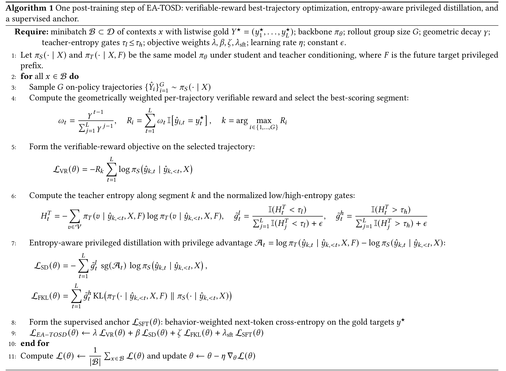
配着上面四路损失读这份伪代码：第 3 行 rollout $G$ 条 on-policy 轨迹；第 4 行计算几何加权命中 $R_i$ 并挑出 $k=\arg\max R_i$；第 5 行只对 $k$ 那条轨迹形成 $\mathcal L_{\mathrm{VR}}$；第 6 行沿着这条轨迹的每一个 token 位置算 teacher 熵 $H_t^T$、构造归一化门 $\tilde g_t^l, \tilde g_t^h$；第 7 行用 stop-grad 的 privilege advantage $A_t = \log \pi_T - \log \pi_S$ 分别写出 $\mathcal L_{\mathrm{SD}}$ 与 $\mathcal L_{\mathrm{FKL}}$；第 8–9 行加上 SFT anchor，得到最终 $\mathcal L_{\mathrm{EA\text{-}TOSD}} = \lambda\mathcal L_{\mathrm{VR}} + \beta\mathcal L_{\mathrm{SD}} + \zeta\mathcal L_{\mathrm{FKL}} + \lambda_{\mathrm{sft}}\mathcal L_{\mathrm{SFT}}$；最后第 11 行对 minibatch 平均后更新参数 $\theta \leftarrow \theta - \eta\nabla_\theta \mathcal L(\theta)$。这一整套只在训练期用到 teacher，推理期完全不涉及 privileged prefix $F$、也不引入任何额外模块。
2.5 训练与推理路径的两点澄清
第一，训练两阶段但不需要两个 backbone。预训练是 behavior-aware NTP + $w_b$ 加权，直接产出一个既懂 SID 也懂 $I_b$ 的 GR；后训练是 EA-TOSD，四路损失但只有一个 $\theta$，teacher/student 的差别仅是 decoder prefix 是否拼接 $F$。这也是论文反复强调的"one backbone throughout"——外挂 ranker 消失、部署侧无新模块。第二，推理仍然是纯 GR 解码。Appendix G.2 的 Table 12 明确写解码配置为 "beam 512, length 4, greedy"，Table 12 字面同时列出该配置字符串；论文未进一步解释 beam 与 greedy 的具体组合方式，因此保留原始字符串、不推断实现细节。附录 C 中作为反面对照的 suffix 变体（Suffix AR / Head / MultiTower）都是在生成完之后再打行为标签，无法改变候选集，这就是"输出端 vs 输入端"路线的本质差距，也是 IDGR 一定要把 $I_b$ 放到 decoder prefix 而不是 output head 的根本原因。上线时 $\pi_S$ 在 $[\text{bos}, I_s, I_r, I_b^\star]$ 上按上述解码配置生成候选集，$I_b^\star$ 是场景的目标行为——例如 checkout path 对应 $b=\mathrm{ord}$，homepage floor 对应 $b=\mathrm{clk}$；换目标行为只需换 instruction，不需要重训练。
3. 实验结果
3.1 主结果：内化行为直接抬高候选质量
论文的核心离线证据在 Table 1：三条并列的方法在同一 backbone、同一解码格式下比较——OxygenREC-v1（PT-only，等价于把 v1 的 pipeline 停在预训练 checkpoint，不做后训练）、Proxy-RM（把 v1 checkpoint 用外挂 ranker 做代理奖励 finetune，等价于"IDGR 之外的最强对照"）、OxygenREC-v2（IDGR 全套）。
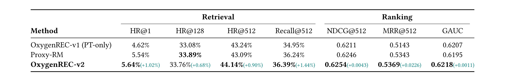
七个指标里 OxygenREC-v2 在 HR@1、HR@512、Recall@512、NDCG@512、MRR@512、GAUC 上都是最好，HR@128 稍逊 Proxy-RM 但差 0.13pt 且被 HR@512 和 Recall@512 反超。真正体现 IDGR 与 proxy reward 差异的是 HR@512：v1 为 43.24%、Proxy-RM 反而降到 43.09%（-0.15pt），OxygenREC-v2 抬升到 44.14%（+0.90pt）。同时 Proxy-RM 在 Recall@512 从 34.95% 上升到 36.24%（+1.29pt）、但代价是候选集本身没变多，只是内部顺序重排——这就是文中说的"proxy reward 只 reorder、不 pull-in behavior-relevant items"。OxygenREC-v2 把 Recall@512 抬到 36.39%（+1.44pt），说明它同时改变了候选集的组成与顺序。HR@1 从 4.62% 升到 5.64%（+1.02pt），是最"硬"的 top-1 命中，也是候选集变好后自然的结果。
排序侧 NDCG@512 从 0.6211 升到 0.6254（+0.0043），MRR@512 从 0.5143 升到 0.5369（+0.0226），GAUC 从 0.6207 升到 0.6218（+0.0011）。相比之下 Proxy-RM 在排序上不弱（NDCG 0.6246、MRR 0.5343），但 GAUC 0.6195 反而低于 v1，说明 proxy reward 会破坏 group 内部的一致性——同一 user 内候选集顺序被单一 ranker 塑形以后，会与真实行为分布产生一定错位。IDGR 内化后候选顺序仍然是"生成分布 argmax"的自然产物，不需要额外 ranker 打分。
3.2 预训练消融：$I_b$ 与 $w_b$ 各贡献一部分
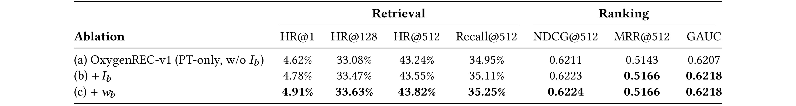
三行组件是叠加式的：(a) 是无 $I_b$、无 $w_b$ 的 Base；(b) 只加 behavior instruction $I_b$；(c) 再加 behavior-weighted 损失 $w_b$（完整预训练）。HR@1 4.62% → 4.78% → 4.91%，HR@128 33.08% → 33.47% → 33.63%，HR@512 43.24% → 43.55% → 43.82%，Recall@512 34.95% → 35.11% → 35.25%。可以看到检索指标随两个组件单调上升；NDCG@512 也从 0.6211 到 0.6224 逐步提高。MRR@512 与 GAUC 在 $I_b$ 加入后就饱和（0.5166 / 0.6218），$w_b$ 再加进来对排序侧不再带来新增。这个 pattern 相当有解释力：$I_b$ 主要重塑候选集（HR/Recall 与排序都动），$w_b$ 是在候选集不错的基础上进一步"把稀有的 order token 抬到与其价值匹配的密度"，因此对 top-K 检索继续有效、但对已经饱和的 group-level 指标不再改动。
3.3 后训练目标消融：VR、SD、FKL 三块各自不可省
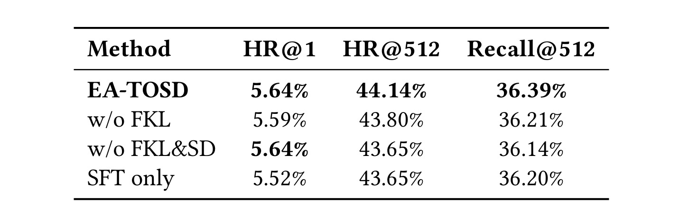
按从上到下的顺序：EA-TOSD 完整版 HR@1 5.64% / HR@512 44.14% / Recall@512 36.39%；先摘掉高熵 FKL 项（w/o FKL）后 HR@512 降到 43.80%、Recall@512 到 36.21%，说明 FKL 对 uncertain 位置的分布保留确实有额外贡献；再摘掉低熵 self-distillation（w/o FKL & SD），只保留 VR，HR@512 掉到 43.65%、Recall@512 掉到 36.14%——teacher 完全不参与后 verifiable reward 的作用变小；最后把 VR 也摘掉，只剩 SFT anchor（SFT only），HR@1 立刻从 5.64% 掉到 5.52%。这条阶梯说明三项在"top-1 命中 / top-512 候选 / recall"三个指标上分别起主导作用，缺一不可，且移除顺序合理时性能下降是单调的。
3.4 熵门控消融：只对 20% 位置做蒸馏最优
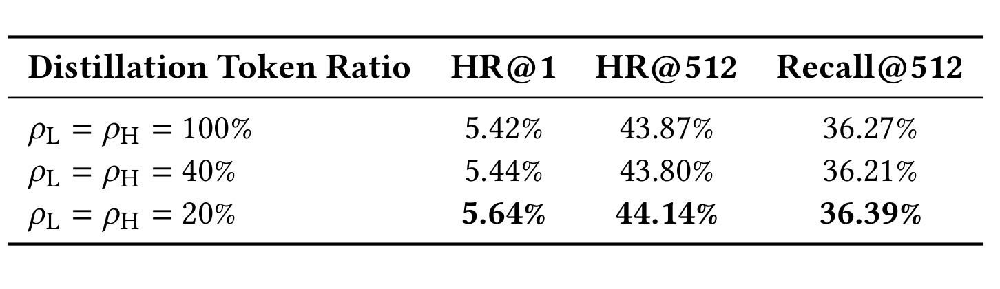
Distillation Token Ratio 从 100%（对所有位置都蒸）→ 40% → 20% 递减，HR@1 分别为 5.42% / 5.44% / 5.64%，HR@512 为 43.87% / 43.80% / 44.14%，Recall@512 为 36.27% / 36.21% / 36.39%。全量蒸并不好——teacher 在很多高熵位置本身也不确定，强行让 student 拟合会带入 teacher 的不确定性；40% 折中反而是最差点；只对头部 20% 做选择性蒸馏才与最强 verifiable reward 匹配。这个结果也解释了 EA-TOSD 里为何要把 $\tilde g_t^l$ / $\tilde g_t^h$ 拆开——"哪一部分 token 该学 preference、哪一部分该学 uncertainty"必须由 teacher entropy 而不是位置比例来决定。
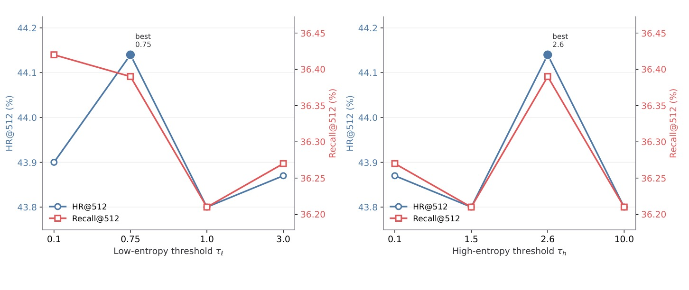
图 5 是与 Table 5 配套的第二个视角：固定 $\tau_h$ 扫 $\tau_l\in\{0.1, 0.75, 1.0, 3.0\}$，HR@512 与 Recall@512 都在 $\tau_l=0.75$ 达峰；再固定 $\tau_l$ 扫 $\tau_h\in\{0.1, 1.5, 2.6, 10.0\}$，同样在 $\tau_h=2.6$ 达峰。两条曲线离峰值往哪个方向偏都会掉，也就是说门控阈值不能"越严越好"也不能"越松越好"：过松（$\tau_l\to 3.0$ 或 $\tau_h\to 0.1$）等价于把几乎所有位置都塞进 SD/FKL，回到 Table 5 的 100% 全量蒸档位；过严（$\tau_l\to 0.1$ 或 $\tau_h\to 10.0$）则把有效的低熵/高熵 token 也过滤掉，蒸馏本身接近 0 权重。峰值 $\tau_l=0.75, \tau_h=2.6$ 对应"低熵位置足够多以覆盖 preference、高熵位置又足够少以保留多样性"，两条曲线的形状也说明两个门控是几乎独立的：$\tau_l$ 主要抬 SD、$\tau_h$ 主要抬 FKL，两者在同一 $\rho_L=\rho_H=20\%$ 的 token 预算下互不抢占。这两张图与 Table 5 一起，才能完整界定默认 $\tau_l=0.75, \tau_h=2.6, \rho_L=\rho_H=20\%$ 的合理性——单看 Table 5 会以为 20% 是可以直接搬用的固定比例，实际上它是"$\tau_l/\tau_h$ 落在峰值时才恰好覆盖到 20% 位置"的联合结果。
3.5 线上 A/B：六个业务面上的真实收益
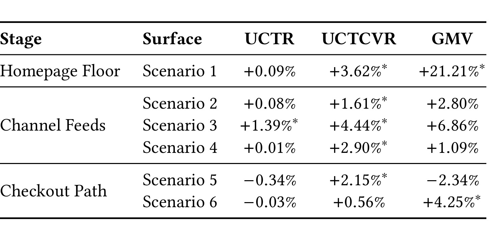
线上部署是 3B-A1B 的 MoE 版本（3.7 会具体说这条与离线的规模差异），六个场景按用户生命周期阶段分组：
- Homepage Floor：Scenario 1（省钱免邮楼层）UCTR +0.09%、UCTCVR +3.62%*、GMV +21.21%*；Scenario 2（百亿补贴渠道 feed）UCTR +0.08%、UCTCVR +1.61%*、GMV +2.80%。
- Channel Feeds：Scenario 3（省钱免邮渠道 feed）UCTR +1.39%*、UCTCVR +4.44%*、GMV +6.86%；Scenario 4（秒杀 feed）UCTR +0.01%、UCTCVR +2.90%*、GMV +1.09%。
- Checkout Path：Scenario 5（加购悬浮层）UCTR -0.34%、UCTCVR +2.15%*、GMV -2.34%（$p=0.23$ 不显著）；Scenario 6（RecForU）UCTR -0.03%、UCTCVR +0.56%、GMV +4.25%*。
论文对结果的总结相当诚实：预训练升级（behavior-aware listwise decoding）驱动"点击到转化"路径，UCTCVR 在 6 个场景上全部为正、5 个场景显著；UCTR 基本持平——也就是说系统并没有把不该来的点击拉进来，而是让原本会点的用户点得更对目标。GMV 与 UCTCVR 同向但更嘈杂，这也是长尾分布下 GMV 指标的正常状态。Scenario 5 的 GMV -2.34% 是唯一负号，但 $p=0.23$ 属于日常波动而非真实回归；论文没有回避这条负值。综合来看，UCTCVR 提升 1.6–4.4%，GMV 提升 2.8–6.8%，这个区间对应 abstract 里给出的整体 A/B 收益范围。
3.6 行为条件如何塑形生成
主结果只说明"IDGR 好"，但没有直接给出"$I_b$ 真的改变了生成"这个断言。论文用两张分析图正面回答——一张衡量输出候选集的迁移，一张直接看 decoder hidden state 的可分性。
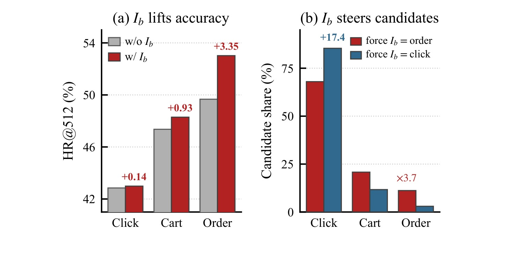
Figure 3(a) 是"$I_b$ 在真实行为条件下的 HR@512 提升"：click 从 ~42→+0.14pt，cart 从 ~46→+0.93pt，order 从 ~50→+3.35pt。order 之所以受益最大，是因为 order 在训练数据里最稀疏、也是价值最高的行为，行为无关生成对它的"覆盖差距"最大，$I_b$ 恰好把生成能力导向真正想要提升的方向。这是 abstract 里"the behavior signal is most useful precisely where behavior-agnostic generation has the least to go on"的直接对应。
Figure 3(b) 是"强制 $I_b$ 到某个固定行为"后候选组成的迁移：把 $I_b$ 强制为 order，生成的候选集里 order-associated 的份额相对 baseline 提升 +17.4pt、超过 3.7× 的比例迁移；强制为 click 则拉向 click 相关。附录 B.5 的 Table 8 给出这条实验的精确数值：force order 时 order 子集 HR@512 稳住在 53.01（真实 upper bound 53.02），click 子集从 42.99 跌到 34.54；force click 时 click 子集稳在 42.99，order 子集跌 ~5 分（53.02→48.33）。这些数据都指向一个事实——$I_b$ 不是"标签"，而是"生成引导"。
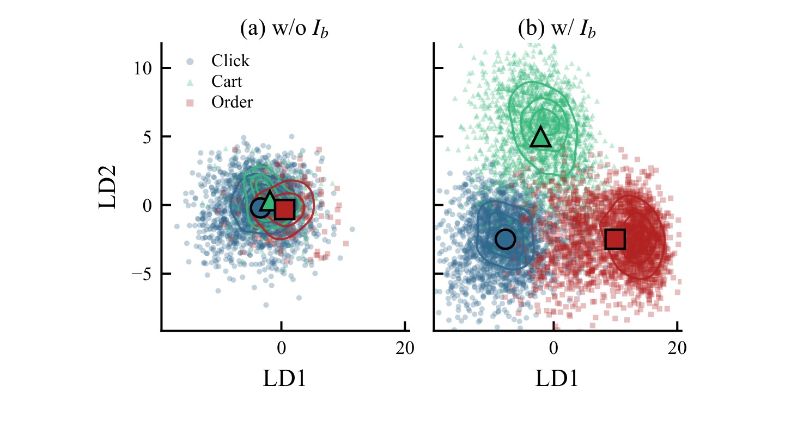
Figure 4 从模型内部再看一次。取 [bos, $I_s$, $I_r$, $I_b$] 消化完但还没吐出第一个 SID token 时的 decoder hidden state，在 LDA 前两个轴上投影：无 $I_b$ 的模型三行为完全混在一起，任何后端 head 都无法从这个 state 分出"这个用户接下来应该被推 click 还是 order"；加上 $I_b$ 后三个类别在 LD1/LD2 平面上清晰分开——也就是说，behavior 分离发生在"第一 token 之前"、发生在生成状态里，而不是最后一步 rerank。这与 Figure 3(b) 的候选集迁移在因果链上是同一件事：因为生成 state 已经被 $I_b$ 分开，所以生成的候选集自然是 behavior-aware 的。
3.7 离线 backbone 与线上 3B-A1B 的规模差异
论文正文与附录之间的一个措辞差异需要在笔记里明确并列，避免读者误解。Section 6.1 说：All offline studies use a "3B encoder-decoder backbone"（摘要本身只提到线上 3B-A1B MoE，未复述离线 backbone 规模），同时线上部署 3B-A1B MoE。Appendix G.2 明确写道 "The offline studies use a 0.7B-parameter configuration; the online deployment (Section 6.3) scales the same architecture to a 3B-parameter, 1B-activated (3B-A1B) MoE." 这两句同时出现在同一版 PDF，是需要读者留意的表述差异。
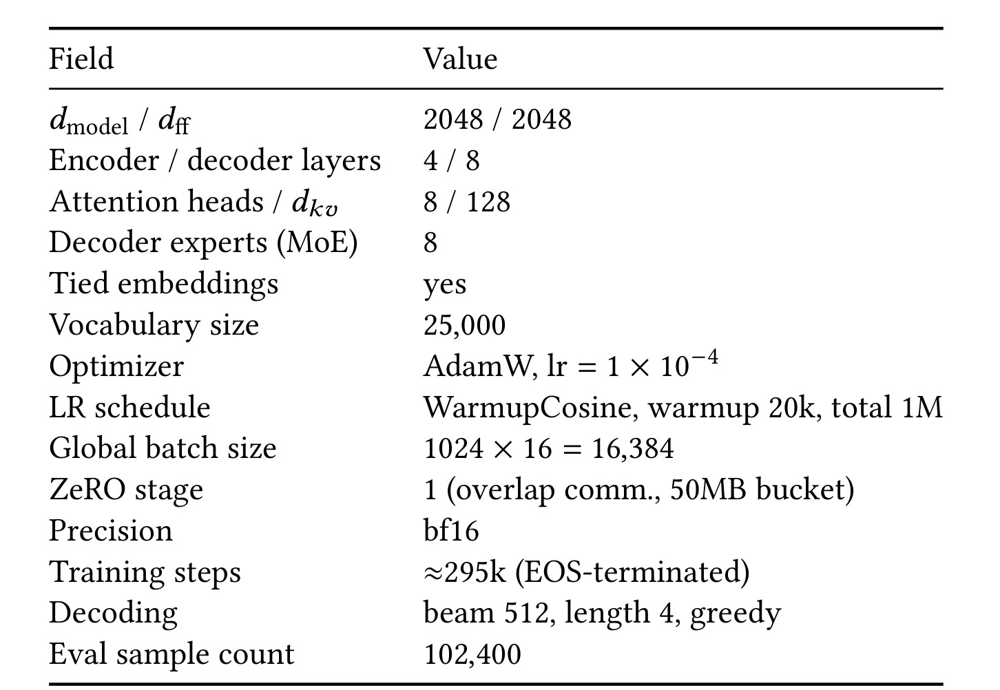
Table 12 恰好是能同时理解这两种说法的结构性信息：$d_{\mathrm{model}}/d_{\mathrm{ff}}=2048/2048$、encoder/decoder layers = 4 / 8、attention heads / $d_{kv}$ = 8 / 128、decoder experts (MoE) = 8、tied embeddings、Vocabulary = 25,000、Optimizer AdamW，$\mathrm{lr}=1\times10^{-4}$、LR schedule WarmupCosine（warmup 20k、total 1M）、Global batch size $1024\times 16 = 16{,}384$、ZeRO stage 1、Decoding = "beam 512, length 4, greedy"（字面字符串，未展开解释）、Eval sample = 102,400。这里明确出现了"decoder experts=8"，与"3B-A1B MoE 部署"里的 MoE 结构一致；同一 backbone 家族里，参数数取决于 experts 数目 × 每 expert 参数量，"离线用 0.7B 配置、线上按同一架构 scale 到 3B-A1B"（即 MoE experts / activation 更多）与"offline 使用 3B encoder-decoder backbone"是两句不完全兼容的表述——笔记态度是并列呈现原文两句、不做单一断言、不猜测。以论文自身 Appendix G.2 的 "0.7B-parameter configuration" 更像是精细描述，主文段落 Section 6.1 中的 "3B encoder-decoder backbone" 更像是与线上 3B-A1B 对齐的一般叙述；如果要严格复现，应以 Table 12 的结构 + Appendix G.2 的 0.7B 说法为准，但这需要作者澄清，笔记不做结论。
3.8 其他细节：privileged 信息选择、复杂度与稳定性
- Privileged 信息选择的事实核对：附录 E 的 Table 10 caption 明确写"Add exposure ($\rho_{\min}=0$，含 expo/clk/cart/ord) — (default)"，即 default 标注对应的 teacher variant 是最密（dense/noisy）的 $\rho_{\min}=0$ pool。§6.2.2 与 Table 3 的消融又直接比较了 Expo 与 Click 两种 privileged 信息：Expo 得 5.62% / 43.80% / 36.19%，Click（去掉 exposure-only、只保留 click+cart+order）得 5.64% / 44.14% / 36.39%，Click 集在三项上全部更优。PDF 正文并未清楚解释为何 Table 10 default 标注为 $\rho_{\min}=0$、而消融最优是 Click 集；也没有一句话明确指出 Table 1 主结果与 §6.3 线上系统最终采用的到底是哪个 pool（我在 §6.1 / §6.2 / §6.3 / Appendix E 各段均未找到明确指认的原句）。因此笔记的立场是并列陈述两条事实——"Table 10 default = $\rho_{\min}=0$"与"Table 3 消融显示 Click 集更优"，不再对最终 pool 作出选择性断言；曝光样本作为 privileged view 更嘈杂这一点由 Table 3 数据本身支撑，但是否被 IDGR 主结果采用需作者进一步澄清。
- Suffix vs Instruction（附录 C，未截图）：Suffix AR/Head/MultiTower 全部把行为放在输出端，性能弱于 IDGR 的输入端 $I_b$，尤其在 order 子集上差距明显；侧面证明"input-side 才能改变候选集"。
- 训练/优化稳定性（附录 H）：预训练时 Base 和 $+I_b$ 两条 loss 曲线基本重叠，梯度范数 warmup 峰后落入同一稳定区间，说明 $I_b$ 不引入优化难度；后训练时 supervised loss 单调下降、HR@512 单调上升，VR 与 FKL 同步收敛，SFT anchor 起到"防漂"作用，没有出现 proxy reward 常见的发散。
- 复杂度：与 v1 相比，唯一新增的可训练参数是 $\psi$（一个两层 FFN），推理无任何新模块。训练期 teacher 只是同一 backbone 多前置一段 $F$，等价于加长 prefix，参数量不变，计算增量近似线性正比于 $F$ 长度 $m\cdot c$（$m\le$ 未来 target 数、$c=3$）。
4. 总结
4.1 我的判断
OxygenREC-v2 值得深读的地方不在于"又一篇京东生成式推荐工业稿"，而在于它把过去两年 GR 与 RL/蒸馏结合的方向做了一个明确的收敛：把行为信号完全内化，训练两端共用一条 behavior-value scale（$w_b$ / $I_b$ / $\rho_{\min}$），后训练用真实行为命中当奖励、用共享 backbone + 未来 prefix 的 teacher 做熵门控自蒸馏，全流程只有一个 $\theta$、推理无外挂。这条设计等价于告诉一个工业推荐团队："你可以扔掉外挂 ranker、扔掉调 $\alpha_j$ 的日子，只要把 behavior 变成 instruction、把命中变成奖励、把未来变成 privileged prefix"。VR + SD + FKL + SFT anchor 的四段式组合看起来朴素，但每一项都有独立而不重叠的作用（Table 4/5 已经证明），并且默认阈值 $\tau_l/\tau_h/\rho_{L,H}$ 都刚好落在敏感性曲线的峰值区，说明作者是有过充分工程校准的。
另外我认为很重要的一点是这套框架的"可运营性"：换场景只需换 $I_b^\star$（homepage 用 click、checkout 用 order），不需要重训练，也不需要多路 ranker 调权，这对工业侧极其友好。
4.2 工程启发与复现建议
- 如果你正在做 GR + RL 的 pipeline，值得把 verifiable reward 作为第一优先级——只需要按 SID 逐位命中、几何权重聚合、只对 argmax rollout 反传，比 proxy ranker 简单得多，也去除了 reward hacking 的空间。
- Privileged teacher 的构造成本几乎为零：共享 backbone、只多一段 near-future prefix，训练后即可丢弃。这也意味着我们可以把"以 future 观测为 privileged view"的思路推广到更多 sequential 推荐任务，只要 gold future 是可以从日志构造的。
- Entropy-aware routing 是很关键的一块，20% token 比例 + $\tau_l=0.75/\tau_h=2.6$ 的默认设置需要一点冷启动搜索。建议复现时先用 40% 做粗调，再收紧到 20%。
- 行为权重 $w_b=\{1.2, 1.5, 2.0\}$ 与 privileged threshold $\rho_{\min}$ 必须放在同一条 scale 上校准（论文的 $k$ 敏感性表明脱离默认区都会掉点），复现时不要独立调这两个超参。
- SFT anchor 不要省。所有 verifiable reward + self-distill 的工作都容易在没有 anchor 时发生 policy drift，OxygenREC-v2 的曲线稳定很大程度上来自这一项。
4.3 局限与后续跟进
- 论文只覆盖 click / cart / order 三种行为，收藏、观看时长、退款、退货等负反馈没有进入 $I_b$ 与 $w_b$；作者自己在 conclusion 里承认这是明确的下一步。
- 3B-A1B 的 MoE 部署与 0.7B 的离线 configuration 之间的规模差异需要作者进一步澄清（详见 3.7）；如果读者要按论文精确复现，先按 Table 12 结构 + Appendix G.2 的 0.7B 说法做离线实验会更稳。
- Table 6 的 Scenario 5 GMV -2.34% 虽然不显著，也提醒下游对"加购悬浮层"这种深漏斗场景的表现要额外监控——GR 生成的候选集在深漏斗场景可能与已有推荐链条存在替代关系。
- 全部实验都在京东内部一个月流量上，公开数据集上的可迁移性未验证；后续如果有开源版本或公开数据集重跑，可以更好地区分"IDGR 本身"与"京东语料结构"对指标的相对贡献。
- Privileged teacher 的训练成本在 $F$ 变长时会线性增长，如果扩展到更长 look-ahead 需要评估 GPU 内存与训练时长；论文 conclusion 也把"降低 privileged teacher 训练成本"列为 future work。